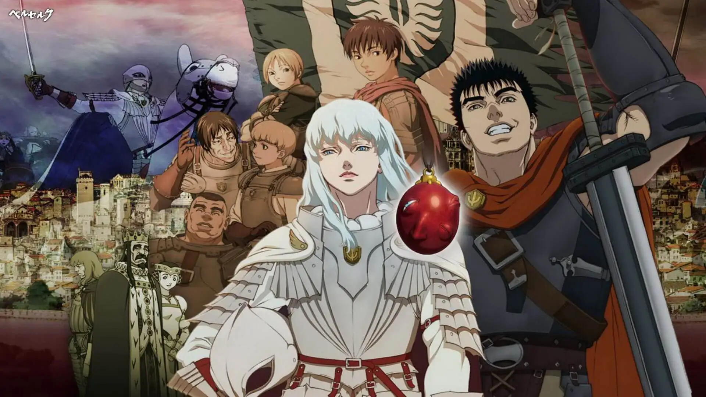

Filmes de Berserk
A trilogia de filmes "Berserk: A Era de Ouro" é uma adaptação cinematográfica do manga homônimo de Kentaro Miura. Lançada entre 2012 e 2013, a trilogia mergulha os espectadores no sombrio e visceral universo de Berserk. Dirigidos por Toshiyuki Kubooka, os filmes são conhecidos por sua animação intensa e fidelidade à narrativa original, capturando a essência da obra de Miura.
Os Filmes Que Compõem Essa Trilogia São:
A trilogia é elogiada por sua fidelidade à trama do mangá, recriando cenas marcantes e mantendo a atmosfera sombria e intensa característica de Berserk. A trilogia é destinada a um público maduro devido à violência gráfica, temas sombrios e cenas intensas.
Arco Era do Ouro I: Ovo do Rei Supremo - "Berserk: A Era de Ouro - O Ovo do Rei Supremo" mergulha os espectadores nas trevas e complexidades do universo de Guts e Griffith. O filme introduz o protagonista Guts, um mercenário atormentado por seu passado sombrio, e sua relação com Griffith, líder do carismático Bando do Falcão. A trama destaca a importância do "Ovo do Rei Supremo" como um elemento central para o enredo, enquanto explora as origens e ambições obscuras de Griffith. A animação intensa e a fidelidade à obra original de Kentaro Miura cativam os fãs e estabelecem o tom para os eventos futuros.
Arco Era de Ouro II: A Batalha de Doldrey - Em "Berserk: A Era de Ouro - A Batalha pelos Doldre", a narrativa atinge novos patamares de intensidade. O filme aprofunda a complexa relação entre Guts e Griffith, enquanto ambos enfrentam desafios monumentais na épica Batalha pelos Doldre. A trama explora as consequências emocionais e físicas desse conflito, revelando camadas mais profundas nos personagens principais. Com cenas de ação impressionantes e um enredo que mantém os fãs à beira de seus assentos, o filme continua a saga de Berserk com maestria.
Arco Era do Ouro III: Declínio - "Berserk: A Era de Ouro - A Ascensão" conclui de maneira épica a trilogia, levando os espectadores a eventos traumáticos e inesquecíveis. O filme aborda o Eclipse, um momento crucial na narrativa, explorando as ramificações psicológicas nos personagens principais após essa experiência devastadora. Com uma animação impressionante e uma conclusão que deixa uma marca duradoura, este capítulo final consolida a trilogia como uma adaptação cinematográfica excepcional de uma das sagas mais sombrias e cativantes do mundo dos mangás.

Essa trilogia de filmes não apenas oferece uma visão cinematográfica da obra-prima de Kentaro Miura, mas também proporciona uma experiência intensa e visceral para os fãs de Berserk. A combinação de animação impressionante, fidelidade à narrativa original e uma exploração profunda dos personagens solidifica esses filmes como uma adaptação digna de uma das sagas mais icônicas do mundo dos mangás.